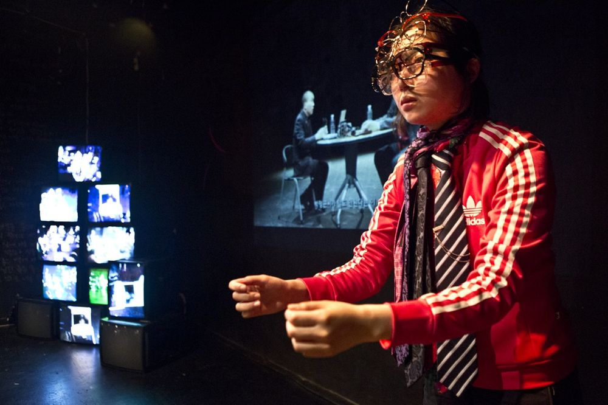

Green Pig > Archive > Commie: A Study for Rehabilitation (working title)

Resisting state power through the case of photographer Park Jeonggeun, who served a prison sentence for violating the National Security Act. The performers watch and imitate Okin Collective's video Seoul Decadence, featuring Park, who had to learn acting to stand in court, and an actor, and they talk about the things one performs to be "rehabilitated," like smiling and handing out gimbap and cigarettes.
2013.7.11–21 / Theater Lab Hyehwa-dong 1beonji
Co-devised by: Green Pig
Director: Yoon Hansol
Cast: Kwak Donghyeon, Kim Hyoyeong, Park Haneul, Lee Jeongho, Lim Jeonghui, Jeon Seonu, Jung Daeyong, Jung Yanga, Hwang Miyeong
Dramaturg: Kim Minseung
Music: Min Gyeonghyeon
Costumes: Lee Yuseon
Lighting: Choi Boyun
Assistant director: Park Hyunji
Web design: Kim Sol
Photography & Video: Lee Jirak
Production: Green Pig
Previous: Tree Won't Seek for Shoe Store | Next: Desdemona: A Play About a Handkerchief
Back to the archive | Any work
Published 2026.11.13